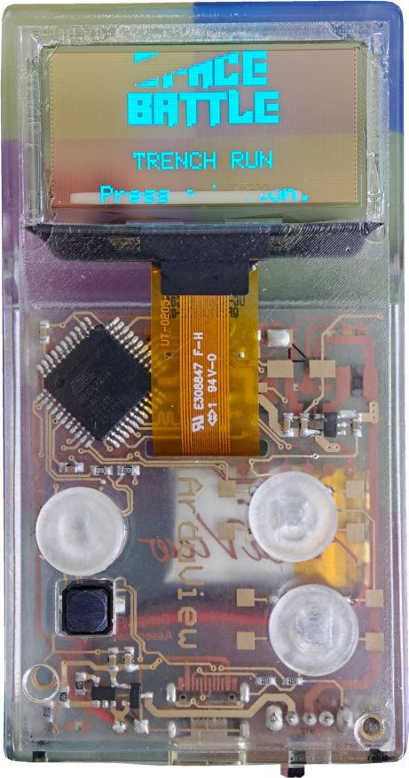

Projects / Selected work
Curiosity,
made tangible.
A few of the products and questions I’ve been spending my time on.

01 / Founder & CEO
Eazeye
Eazeye is where my entrepreneurial journey began. The work centers on a deceptively simple question: can a display make better use of the light already around us?
From early prototypes to a family of displays, it has been my practical education in turning an idea into a physical product.
Explore Eazeye ↗
02 / Co-founder
ArduView
A transparent handheld game console that puts the hardware on display. Its clear body and see-through screen make the inside part of the outside.
ArduView brings together product design, playful technology, and the work of introducing a new hardware product to the world.
Explore ArduView ↗03 / Founder
LaunchMaxx
My next chapter in hardware entrepreneurship. LaunchMaxx brings together the work around products: research, development, marketing, and the operational details that connect them.
It’s where I’m applying lessons from building Eazeye while exploring how AI can support the process.
Talk about LaunchMaxx ↗04 / Ongoing experiments
AI that helps
build things.
I’m exploring engineering assistants and source-based CAD and rendering workflows—connecting natural-language ideas with tools used to create and inspect physical products.
These are ongoing experiments. The focus is on useful workflows, clear sources, and checking the actual output.
Find me on GitHub ↗